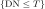
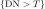
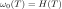
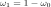
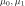
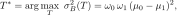
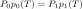

Method
For a threshold : class 0 =

, class 1 =
, with weights
,
, means
. Otsu:

(minimum error).Example
Water mapping: water is dark in NIR and in SAR intensity, land bright; one threshold gives a binary water mask.
from skimage.filters import threshold_otsu
T = threshold_otsu(nir); water = nir < TIntuition
Look at the valley between the two hills of the histogram and cut there.
Pitfall
A threshold uses no spatial information: noise and mixed pixels produce isolated errors; and if one class is tiny, its hill is invisible and Otsu splits the dominant class instead.